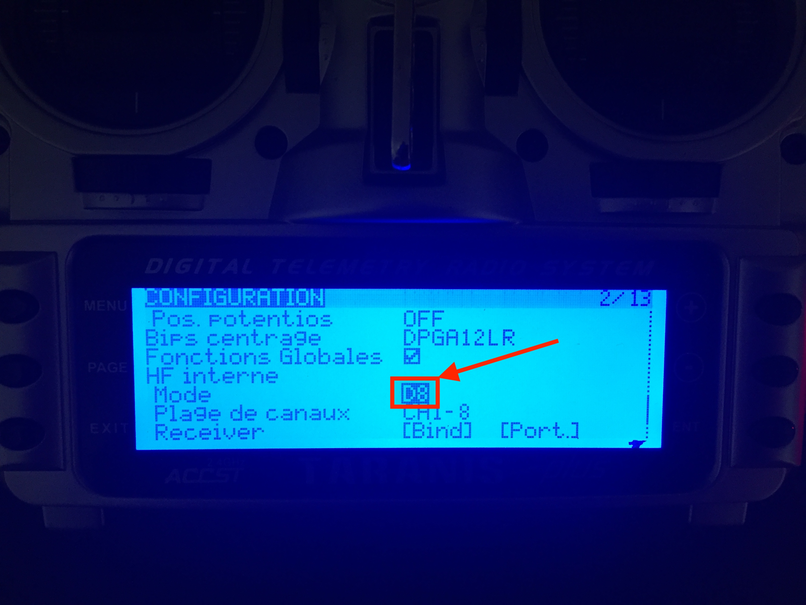
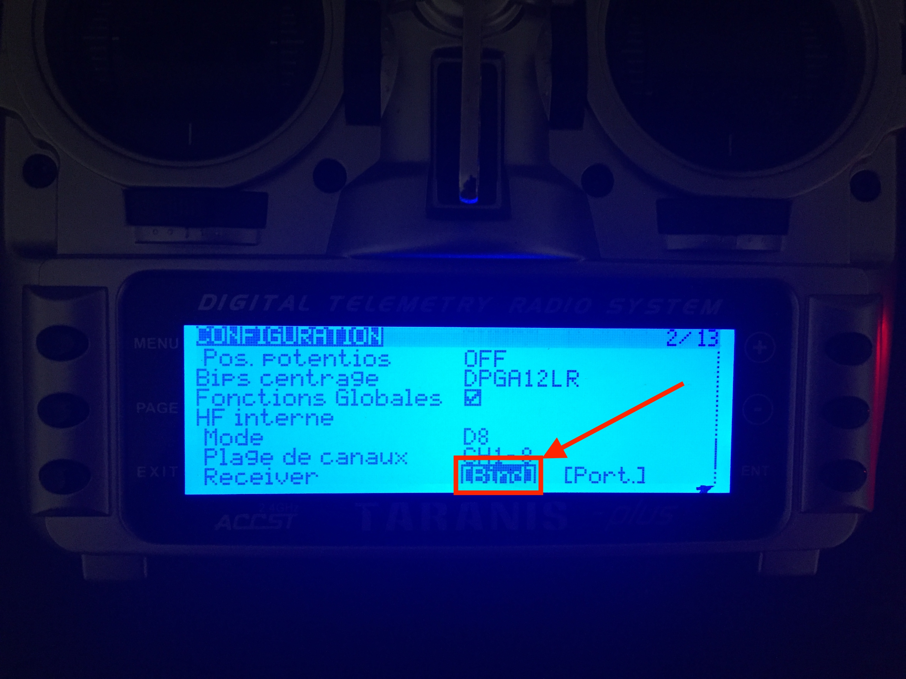
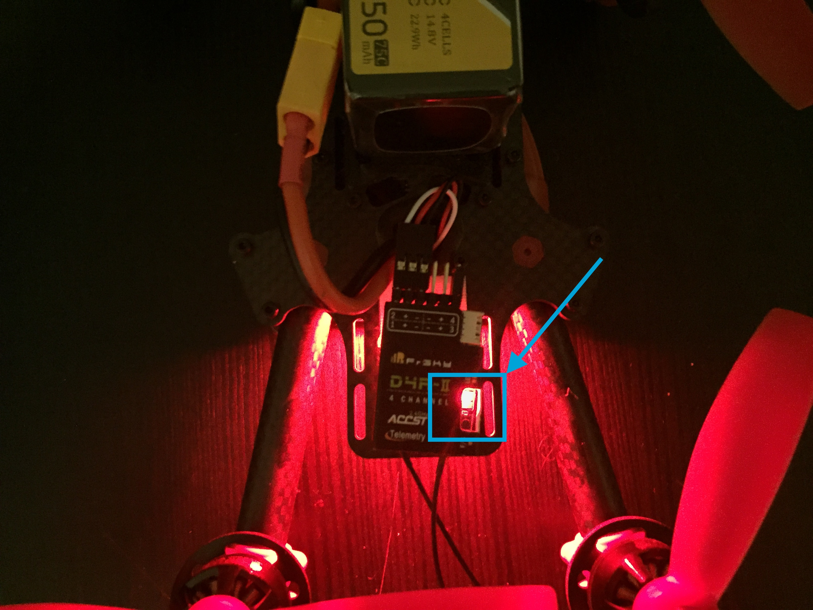

Comment lier son récepteur avec la radio (Frsky XD9 Plus)
Aujourd’hui, je vous propose un petit tutoriel pour binder votre radio (Frsky XD9 plus) avec vos récepteurs.
Étape 1 - Connaître le protocole de communication du récepteur
La XD9 plus possède deux modes de communication par défaut put-être plus si vous avez une ancienne version ou une version étrangères. Ce sont les modes D16 et LTB.
Il vous faudra vous renseigner sur le mode utilisé par le récepteur que vous souhaitez binder. Pour ma part ici, je souhaite binder un récepteur DR4-II. Pas de chance le mode de communication est D8. Si vous avez suivi, sur les nouvelles versions des radios Frsky ce mode-là n’est pas activé. Pour pouvoir activer ce mode, il vous faudra flasher votre radio avec le logiciel companion (lien pour télécharger le logiciel) et votre ordinateur. Bientôt, je vous ferrais un article pour activer ce mode et flasher votre radio.
En cherchant sur internet ou dans le manuel, vous trouverez le mode de communication de votre récepteur.
Étape 2 - Création et paramétrage du modèle sur la radio
Maintenant que vous connaissez le mode de communication, vous allez devoir créer un nouveau modèle sur votre radio, une fois ceci fait rendez-vous dans la première page de configuration. Descendez tout en bas, vous aurez une section “internal HF” avec le paramètre “mode”. Ici, sélectionner le mode qui correspond à votre récepteur.

Une fois cette partie réalisée, nous allons pouvoir binder notre récepteur.
Étape 3 - Réalisation du bindage
Pour ce faire, ne quittez pas le menu. Juste en dessous de mode, vous allez voir le paramètre bind. Sélectionnez-le. Celui-ci doit clignoter et votre radio doit faire un bip régulier.

Une fois cette partie faite, rendez-vous du côté du récepteur. Vous allez appuyer sur le bouton F/S du récepteur tout en branchant votre batterie (oui cette étape est un peu périlleuse).

À ce moment-là, la LED clignotera en rouge puis très rapidement en vert et rouge maintenant cette étape est terminée.
Vous pouvez débrancher la batterie de votre modèle puis sortir du menu dans la radio.
Une fois ceci fait, vous allez rebrancher la batterie de votre modèle et vous allez voir sur votre radio l’icône de la batterie de votre récepteur et la LED de votre récepteur sera verte et fixe. Maintenant, la liaison entre la radio et le récepteur est effective. Vous pouvez aller profiter de votre modèle. :)
Si vous rencontrez des problèmes, n’hésitez pas à laisser un commentaire.